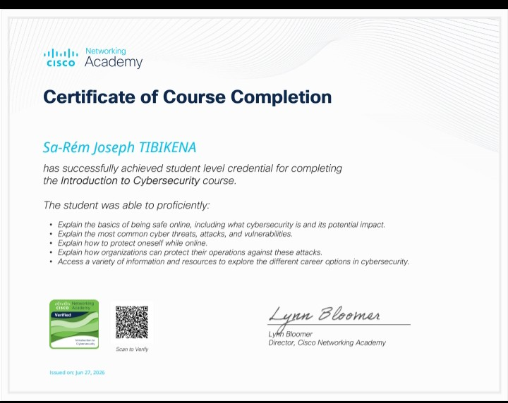
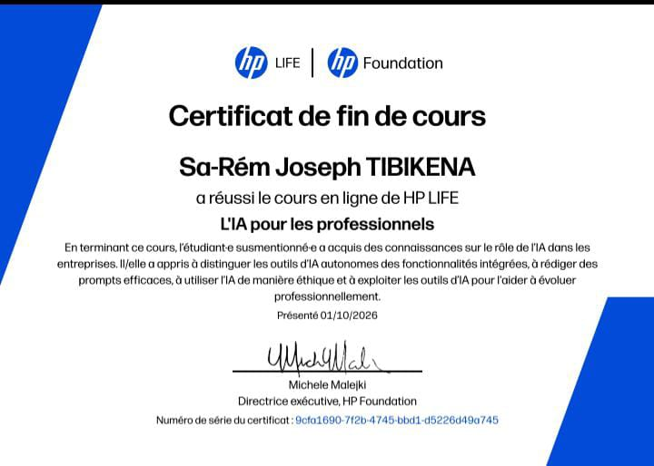
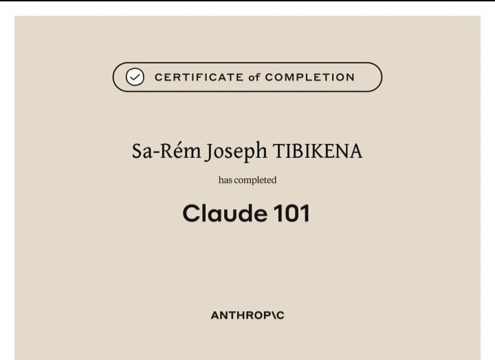
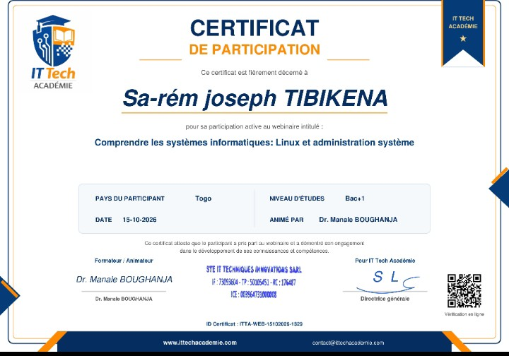
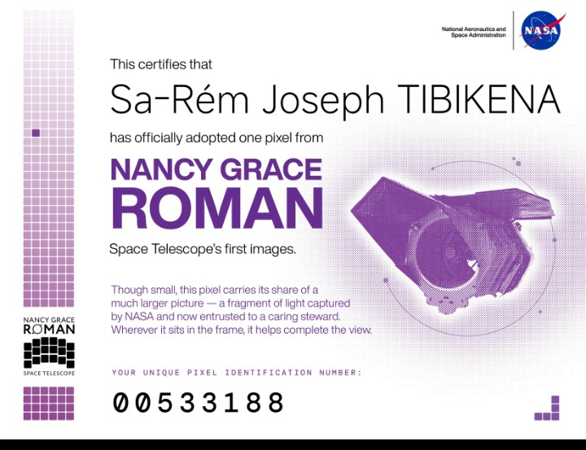

Introduction to Cybersecurity
Cisco Networking Academy
CybersécuritéÉtudiant en deuxième année de Licence en Systèmes et Réseaux informatiques à DEFITECH, je suis passionné par les technologies informatiques, l'administration des réseaux et les systèmes Linux. Je développe progressivement mes compétences en programmation, en configuration réseau et en administration système. Mon objectif est de devenir ingénieur en réseaux et systèmes, avec une spécialisation en cybersécurité.
Je poursuis ma deuxième année de Licence à DEFITECH. Ma formation porte notamment sur les réseaux informatiques, les systèmes d'exploitation, la programmation et les technologies nécessaires à l'administration informatique.
Mon baccalauréat scientifique m'a permis de renforcer mes connaissances en mathématiques et en sciences, ainsi que mon esprit logique et ma capacité à analyser des problèmes.
J'étudie la programmation et le développement web afin de concevoir des pages, de comprendre le fonctionnement des applications et de résoudre des problèmes informatiques.
Découverte de l'environnement Linux, utilisation de commandes système, gestion des fichiers et apprentissage des bases de l'administration d'un serveur.
Apprentissage de l'adressage IP, de la configuration des équipements réseau, de l'interconnexion des réseaux et de la segmentation avec les VLAN.
Organisation des tâches, planification des étapes, répartition des responsabilités et suivi de l'avancement d'un projet pour atteindre les objectifs fixés.
Je m'intéresse aux principes de la sécurité informatique, à la protection des systèmes et des réseaux, ainsi qu'aux bonnes pratiques permettant de réduire les risques.
Projet académique consistant à préparer un serveur Ubuntu, installer et configurer Apache, héberger une page web et vérifier son accessibilité depuis un ordinateur client.
En savoir plusMise en pratique de la configuration des commutateurs, de l'adressage IP et de l'interconnexion de plusieurs réseaux à l'aide d'un routeur.
En savoir plusUn espace consacré à mes travaux pratiques et à mes apprentissages en systèmes, réseaux et développement, avec l'objectif de documenter mes réalisations et de progresser à travers des projets concrets.
En savoir plusQuelques distinctions et certifications obtenues dans le domaine informatique.

Cisco Networking Academy
Cybersécurité
HP LIFE
Intelligence artificielle
Anthropic
Intelligence artificielle
IT Tech Académie
Administration systèmes
NASA – Adopt a Pixel
Exploration spatialePour échanger sur un projet informatique, une collaboration ou une opportunité d'apprentissage, tu peux me contacter.